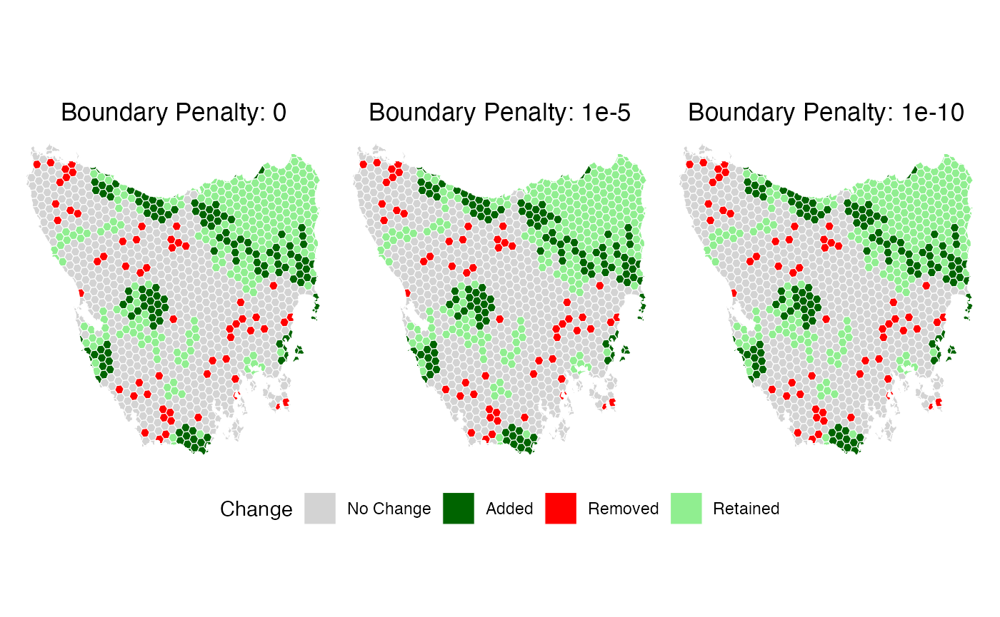

Load data
# load data
tas_pu <- get_tas_pu() %>%
mutate(cost = cost*10000)
# At present minpatch works with sf objects. Here we convert the data to sf.
tas_features <- get_tas_features() %>%
stars::st_as_stars() %>%
sf::st_as_sf()
tas <- sf::st_interpolate_aw(tas_features, tas_pu, extensive = FALSE, keep_NA = FALSE, na.rm = FALSE) %>%
st_join(tas_pu, join = st_equals)
#> Warning in st_interpolate_aw.sf(tas_features, tas_pu, extensive = FALSE, :
#> st_interpolate_aw assumes attributes are constant or uniform over areas of x
features = tas %>%
sf::st_drop_geometry() %>%
dplyr::select(-all_of(c("id", "cost", "locked_in", "locked_out"))) %>%
names()
# Convert data to binary again
tas <- tas %>%
mutate(across(all_of(features), ~ if_else(.x > 0, 1, 0)))Run prioritizr analysis
p <- problem(tas, features = features, cost_column = "cost") %>%
add_min_set_objective() %>%
add_relative_targets(0.30) %>% # 30% of each feature
add_binary_decisions() %>%
add_default_solver(verbose = FALSE)
s <- solve(p)
MinPatch
Choose a patch size
# Calculate reasonable parameters based on planning unit characteristics
median_area <- median(st_area(tas))
# Set minimum patch size to 5x median planning unit area
min_patch_size <- median_area * 5
# Set patch radius to encompass approximately 10 planning units
patch_radius <- sqrt(median_area * 10)
cat("MinPatch parameters:\n")
#> MinPatch parameters:
cat("- Minimum patch size:", round(min_patch_size, 3), "square meters\n")
#> - Minimum patch size: 324514429 square meters
cat("- Patch radius:", round(patch_radius,3), "meters\n")
#> - Patch radius: 25476.04 meters
cat("- This means patches must be at least", round(min_patch_size/median_area, 3),
"times the median planning unit size\n")
#> - This means patches must be at least 5 times the median planning unit sizeRun minpatch
result <- run_minpatch(
prioritizr_problem = p,
prioritizr_solution = s,
min_patch_size = min_patch_size,
patch_radius = patch_radius,
remove_small_patches = TRUE,
add_patches = TRUE,
whittle_patches = TRUE,
verbose = TRUE
)
#> Validating inputs...
#> Initializing data structures...
#> Calculating boundary matrix using 14 cores...
#> Processing chunks in parallel...
#> Combining results...
#> Creating patch radius dictionary (optimized)...
#> Processed 100 of 1128 planning units
#> Processed 200 of 1128 planning units
#> Processed 300 of 1128 planning units
#> Processed 400 of 1128 planning units
#> Processed 500 of 1128 planning units
#> Processed 600 of 1128 planning units
#> Processed 700 of 1128 planning units
#> Processed 800 of 1128 planning units
#> Processed 900 of 1128 planning units
#> Processed 1000 of 1128 planning units
#> Processed 1100 of 1128 planning units
#> Calculating initial patch statistics...
#> Stage 1: Removing small patches...
#> Stage 2: Adding new patches...
#> Initial unmet targets: 30
#> Unmet feature IDs: 1, 2, 3, 4, 5, 6, 7, 8, 10, 11, 12, 13, 14, 15, 16, 18, 19, 20, 21, 23, 24, 25, 26, 27, 28, 29, 30, 31, 32, 33
#> Iteration 1 - Unmet targets: 30
#> Found 875 potential patches with scores
#> Best score: 1.440508e-05 for unit 79
#> Added patch centered on unit 79
#> Iteration 2 - Unmet targets: 29
#> Found 873 potential patches with scores
#> Best score: 7.880797e-06 for unit 421
#> Added patch centered on unit 421
#> Iteration 3 - Unmet targets: 27
#> Found 864 potential patches with scores
#> Best score: 5.751114e-06 for unit 387
#> Added patch centered on unit 387
#> Iteration 4 - Unmet targets: 26
#> Found 859 potential patches with scores
#> Best score: 4.461179e-06 for unit 362
#> Added patch centered on unit 362
#> Iteration 5 - Unmet targets: 23
#> Found 850 potential patches with scores
#> Best score: 3.090659e-06 for unit 246
#> Added patch centered on unit 246
#> Iteration 10 - Unmet targets: 17
#> All conservation targets are now met!
#> Stage 3: Removing unnecessary planning units...
#> Edge units found: 427
#> Keystone units: 0
#> New keystone units: 15
#> Scoreable units: 412
#> Unit 66 cannot be removed - adding to keystone set
#> Edge units found: 411
#> Keystone units: 16
#> New keystone units: 0
#> Scoreable units: 411
#> Unit 420 cannot be removed - adding to keystone set
#> Edge units found: 410
#> Keystone units: 17
#> New keystone units: 0
#> Scoreable units: 410
#> Unit 246 cannot be removed - adding to keystone set
#> Edge units found: 409
#> Keystone units: 18
#> New keystone units: 0
#> Scoreable units: 409
#> Unit 419 cannot be removed - adding to keystone set
#> Edge units found: 408
#> Keystone units: 19
#> New keystone units: 0
#> Scoreable units: 408
#> Unit 438 cannot be removed - adding to keystone set
#> Unit 439 cannot be removed - adding to keystone set
#> Unit 111 cannot be removed - adding to keystone set
#> Unit 537 cannot be removed - adding to keystone set
#> Unit 864 cannot be removed - adding to keystone set
#> Unit 926 cannot be removed - adding to keystone set
#> Whittling iteration 100
#> Whittling iteration 200
#> Whittling iteration 300
#> Whittling iteration 400
#> No more edge units to consider - terminating
#> Calculating final statistics...
#> MinPatch processing complete!Visualise the minpatch solution
plot_minpatch(result, title = "MinPatch Results")Analyse the final results
print_minpatch_summary(result)
#> === MinPatch Processing Summary ===
#>
#> Patch Statistics:
#> Initial patches: 58 (valid: 11)
#> Final patches: 12 (valid: 11)
#> Area change: 4378267698.40 (21.8%)
#>
#> Cost Breakdown:
#> Planning unit cost: 68792497.20
#> Boundary cost: 0.00
#> Total cost: 68792497.20
#> Selected units: 427
#>
#> Feature Representation:
#> Total features: 33
#> Targets met: 33
#> Targets unmet: 0
#> Mean proportion: 0.449
#> Total shortfall: 0.00
#>
#>
#> === End Summary ===
# Compare original vs MinPatch solutions
comparison <- compare_solutions(result)
# Print overall comparison
cat("=== Overall Solution Comparison ===\n")
#> === Overall Solution Comparison ===
print(comparison$overall)
#> Metric Original MinPatch Change Percent_Change
#> 1 Selected Planning Units 330 427 97 29.39394
#> 2 Total Area 20052333083 24430600782 4378267698 21.83421
#> 3 Number of Patches 58 12 -46 -79.31034
#> 4 Valid Patches (>= min size) 11 11 0 0.00000
#> 5 Median Patch Size 64915437 661924221 597008784 919.67152
#> 6 Planning Unit Cost 68792497 68792497 0 0.00000
#> 7 Boundary Cost 0 0 0 NA
#> 8 Total Cost 68792497 68792497 0 0.00000
# Print feature-level comparison
cat("\n=== Feature-Level Area Comparison ===\n")
#>
#> === Feature-Level Area Comparison ===
print(comparison$features)
#> Feature_ID Target Original_Area MinPatch_Area Area_Change Percent_Change
#> 1 1 1.2 2 4 2 100.000000
#> 2 2 33.0 35 39 4 11.428571
#> 3 3 2.7 3 6 3 100.000000
#> 4 4 170.1 177 197 20 11.299435
#> 5 5 213.9 221 260 39 17.647059
#> 6 6 242.1 250 317 67 26.800000
#> 7 7 9.9 12 13 1 8.333333
#> 8 8 108.3 113 137 24 21.238938
#> 9 9 30.9 41 53 12 29.268293
#> 10 10 260.4 271 339 68 25.092251
#> 11 11 62.4 67 82 15 22.388060
#> 12 12 132.0 151 190 39 25.827815
#> 13 13 133.5 138 163 25 18.115942
#> 14 14 122.4 128 137 9 7.031250
#> 15 15 62.4 66 76 10 15.151515
#> 16 16 240.0 246 310 64 26.016260
#> 17 17 0.3 1 1 0 0.000000
#> 18 18 27.6 29 29 0 0.000000
#> 19 19 6.6 8 8 0 0.000000
#> 20 20 18.0 19 25 6 31.578947
#> 21 21 24.3 31 41 10 32.258065
#> 22 22 7.5 12 13 1 8.333333
#> 23 23 34.5 39 54 15 38.461538
#> 24 24 11.1 12 12 0 0.000000
#> 25 25 47.1 51 77 26 50.980392
#> 26 26 9.3 11 11 0 0.000000
#> 27 27 86.7 88 102 14 15.909091
#> 28 28 6.6 7 12 5 71.428571
#> 29 29 1.2 2 2 0 0.000000
#> 30 30 186.0 192 195 3 1.562500
#> 31 31 66.3 71 97 26 36.619718
#> 32 32 30.9 36 49 13 36.111111
#> 33 33 57.9 60 67 7 11.666667
#> Original_Target_Met MinPatch_Target_Met Original_Proportion
#> 1 TRUE TRUE 1.666667
#> 2 TRUE TRUE 1.060606
#> 3 TRUE TRUE 1.111111
#> 4 TRUE TRUE 1.040564
#> 5 TRUE TRUE 1.033193
#> 6 TRUE TRUE 1.032631
#> 7 TRUE TRUE 1.212121
#> 8 TRUE TRUE 1.043398
#> 9 TRUE TRUE 1.326861
#> 10 TRUE TRUE 1.040707
#> 11 TRUE TRUE 1.073718
#> 12 TRUE TRUE 1.143939
#> 13 TRUE TRUE 1.033708
#> 14 TRUE TRUE 1.045752
#> 15 TRUE TRUE 1.057692
#> 16 TRUE TRUE 1.025000
#> 17 TRUE TRUE 3.333333
#> 18 TRUE TRUE 1.050725
#> 19 TRUE TRUE 1.212121
#> 20 TRUE TRUE 1.055556
#> 21 TRUE TRUE 1.275720
#> 22 TRUE TRUE 1.600000
#> 23 TRUE TRUE 1.130435
#> 24 TRUE TRUE 1.081081
#> 25 TRUE TRUE 1.082803
#> 26 TRUE TRUE 1.182796
#> 27 TRUE TRUE 1.014994
#> 28 TRUE TRUE 1.060606
#> 29 TRUE TRUE 1.666667
#> 30 TRUE TRUE 1.032258
#> 31 TRUE TRUE 1.070890
#> 32 TRUE TRUE 1.165049
#> 33 TRUE TRUE 1.036269
#> MinPatch_Proportion
#> 1 3.333333
#> 2 1.181818
#> 3 2.222222
#> 4 1.158142
#> 5 1.215521
#> 6 1.309376
#> 7 1.313131
#> 8 1.265005
#> 9 1.715210
#> 10 1.301843
#> 11 1.314103
#> 12 1.439394
#> 13 1.220974
#> 14 1.119281
#> 15 1.217949
#> 16 1.291667
#> 17 3.333333
#> 18 1.050725
#> 19 1.212121
#> 20 1.388889
#> 21 1.687243
#> 22 1.733333
#> 23 1.565217
#> 24 1.081081
#> 25 1.634820
#> 26 1.182796
#> 27 1.176471
#> 28 1.818182
#> 29 1.666667
#> 30 1.048387
#> 31 1.463047
#> 32 1.585761
#> 33 1.157168
# Print summary statistics
cat("\n=== Feature Change Summary ===\n")
#>
#> === Feature Change Summary ===
print(comparison$summary)
#> features_improved features_reduced features_unchanged targets_gained
#> 1 27 0 6 0
#> targets_lost
#> 1 0Run different patch sizes
The minimum patch size parameter is the core constraint that drives MinPatch behaviour - it determines the threshold below which patches are considered too small and must be either enlarged or removed.
- During Stage 1, MinPatch removes all patches smaller than this threshold (except existing protected areas).
- During Stage 2, it adds new patches large enough to meet this minimum when targets are unmet.
- During Stage 3 (whittling), it prevents the removal of planning units that would make any patch fall below this threshold.
Larger minimum patch sizes result in fewer, bigger patches with potentially higher total area, as MinPatch must ensure every patch meets the size requirement. Smaller minimum patch sizes allow more flexibility, potentially resulting in more patches that are closer to the original prioritizr solution. The choice of minimum patch size should reflect ecological or management considerations - for example, larger patches may be needed to support viable populations or reduce edge effects, while smaller patches may be acceptable in highly connected landscapes or for features that don’t require large contiguous areas.
# Calculate reasonable parameters based on planning unit characteristics
median_area <- median(st_area(tas))
min_patch_size <- median_area * 10
patch_radius <- sqrt(median_area * 10)
result2 <- run_minpatch(
prioritizr_problem = p,
prioritizr_solution = s,
min_patch_size = min_patch_size,
patch_radius = patch_radius,
remove_small_patches = TRUE,
add_patches = TRUE,
whittle_patches = TRUE,
verbose = FALSE
)
median_area <- median(st_area(tas))
min_patch_size <- median_area * 20
patch_radius <- sqrt(median_area * 10)
result3 <- run_minpatch(
prioritizr_problem = p,
prioritizr_solution = s,
min_patch_size = min_patch_size,
patch_radius = patch_radius,
remove_small_patches = TRUE,
add_patches = TRUE,
whittle_patches = TRUE,
verbose = FALSE
)Visualise the minpatch solution
patchwork::wrap_plots(plot_minpatch(result, title = "Patch Size x5"),
plot_minpatch(result2, title = "Patch Size x10"),
plot_minpatch(result3, title = "Patch Size x20"),
guides = "collect",
ncol = 3) &
theme(legend.position = "bottom")
Run different Boundary Penalties
The boundary penalty controls how much MinPatch prioritizes spatial compactness during the “simulated whittling” stage. During whittling, MinPatch considers removing planning units from patch edges, but only if doing so doesn’t increase the total priortizr cost. The boundary penalty affects this decision by penalizing fragmented solutions - higher penalties favour more compact patches by making it costly to create additional “edge” between selected and unselected areas. When MinPatch evaluates whether to remove a unit, it calculates the change in boundary length (units with selected neighbours increase boundary when removed, while units with unselected neighbours decrease boundary) and multiplies this by the boundary penalty. If the resulting boundary cost change exceeds the unit’s cost, the unit cannot be removed. In datasets like Tasmania with long planning unit boundaries relative to unit costs, even small boundary penalties can be highly influential, potentially preventing most unit removals and resulting in similar solutions across different penalty values. Very small penalties (e.g., 1e-10) may be needed to see meaningful differences in such cases.
# Calculate reasonable parameters based on planning unit characteristics
median_area <- median(st_area(tas))
min_patch_size <- median_area * 5
patch_radius <- sqrt(median_area * 10)
result4 <- run_minpatch(
prioritizr_problem = p,
prioritizr_solution = s,
min_patch_size = min_patch_size,
patch_radius = patch_radius,
boundary_penalty = 1e-5,
remove_small_patches = TRUE,
add_patches = TRUE,
whittle_patches = TRUE,
verbose = FALSE
)
result5 <- run_minpatch(
prioritizr_problem = p,
prioritizr_solution = s,
min_patch_size = min_patch_size,
patch_radius = patch_radius,
boundary_penalty = 1e-10,
remove_small_patches = TRUE,
add_patches = TRUE,
whittle_patches = TRUE,
verbose = FALSE
)Visualise the minpatch solution
patchwork::wrap_plots(plot_minpatch(result, title = "Boundary Penalty: 0"),
plot_minpatch(result4, title = "Boundary Penalty: 1e-5"),
plot_minpatch(result5, title = "Boundary Penalty: 1e-10"),
guides = "collect",
ncol = 3) &
theme(legend.position = "bottom")